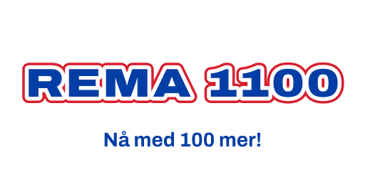
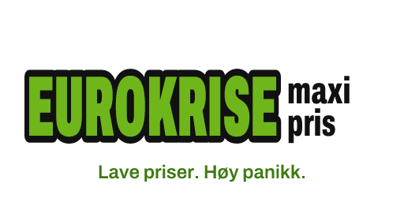
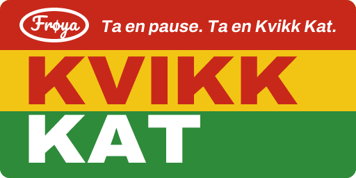
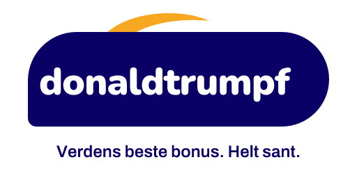
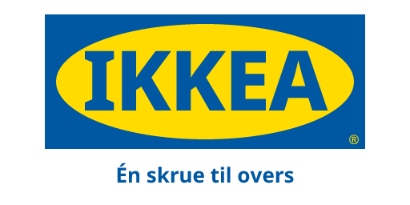

How a scene goes.
You get a role.
You are at the bakery. You want bread, and the baker asks if it should be sliced.
Every scene is a moment you will meet in Norway, from the checkout to the parents' meeting.You say it. Out loud.
Your line is on the screen with its meaning in your language. Listen first if you like, then say it like you would there. No typing, no word puzzles.
Your phone gives you stars.★★★
A speech model on your phone gives up to three stars and points at the sounds that matter, like takk and tak. Your voice never leaves the phone.
Norway answers back.
The other person replies, sometimes in their own dialect, and the scene moves on. Tap a reply to see it written and translated.
Overheard
in Norway.
Four real moments from the app, voiced like in the app. Tap the first line and the reply follows. Then picture yourself saying it.
Book
vs street.
Ten years in Norway, and nobody has asked me if the bear drinks milk. Tap a card to see what people really say.
A Norway that looks familiar.
Shops and apps in the scenes are friendly parodies, so you can laugh at the checkout before you get there.





Explained in your language.
Every line comes with its meaning in one of six languages. Pick the one you think in, and this page switches to it too.